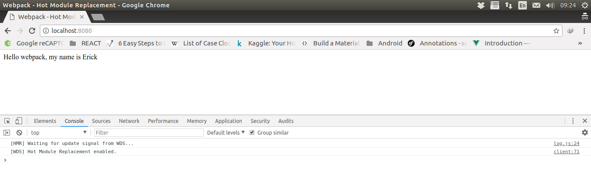
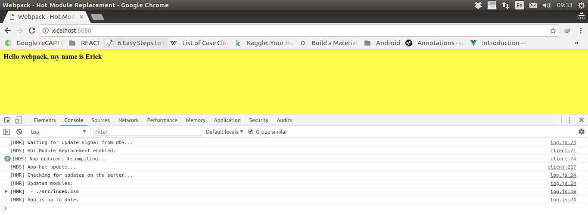

9 Hot Module Replacement
Hot Module Replacement (HMR) bertujuan untuk bertukar, menambah, ataupun menghapus modul saat aplikasi sedang dijalankan tanpa melakukan reload secara berulang-ulang. Secara signifikan, dapat mempercepat developer dalam melakukan pengembangan seperti:
- Tetap mempertahankan aplikasi selama reload dilakukan
- Menghemat waktu pengembangan dengan memperbarui hanya pada bagian yang diubah
- Styling lebih cepat
Langkah-langkah yang memungkinkan modul untuk bertukar masuk dan keluar dari aplikasi:
- Aplikasi akan meminta runtime HMR untuk memeriksa pembaruan
- Runtime secara asynchronous mengambil pembaruan dan memberitahu aplikasi
- Aplikasi kemudian meminta runtime untuk menerapkan pembaruan
- Runtime secara synchronous menerapkan pembaruan
Kita dapat mengatur HMR agar dapat melakukan proses secara otomatis, ataupun dapat memilih untuk meminta interaksi dari developer agar pembaruan terjadi.
Selain melakukan asset secara normal, compiler perlu diberitahu agar memungkinkan melakukan pembaruan dari versi sebelumnya ke versi yang baru. Pembaruan tersebut terdiri dari dua bagian:
- Manifest yang diperbarui (JSON)
- Satu atau beberapa modul yang diperbarui (JavaScript)
Manifest berisi kumpulan kompilasi baru dan daftar semua modul yang diperbarui. Masing-masing modul berisi kode baru untuk semua modul yang diperbarui (atau ditambah penanda/flag yang menunjukkan bahwa modul telah dihapus). Compiler memastikan bahwa ID modul sebelumnya dengan ID modul yang baru konsisten. ID modul akan disimpan di memori, tetapi juga bisa disimpan dalam sebuah file JSON.
HMR adalah fitur opt-in yang hanya mempengaruhi modul yang berisi kode HMR. Salah satu contohnya adalah mem-patch styling melalui style-loader. Agar patch berfungsi, style-loader mengimplementasikan antarmuka HMR. Ketika menerima pembaruan melalui HMR, maka modul yang lama akan digantikan dengan yang baru.
Ketika mengimplementasikan antarmuka HMR dalam modul, kita dapat menjelaskan apa yang seharusnya terjadi jika sebuah modul diperbarui. Namun, dalam kebanyakan kasus, tidak wajib untuk menulis kode HMR di setiap modul. Jika modul tidak memiliki handler HMR, maka pembaruan akan mengalami bubble up. Ini berarti bahwa satu handler dapat memperbarui module tree secara lengkap. Jika satu modul dari module tree diperbarui, seluruh rangkaian dependensi akan dimuat ulang.
HMR dapat digunakan dalam pengembangan aplikasi sebagai pengganti dari LiveReload. webpack-dev-server mendukung hot mode yang mencoba memperbarui dengan HMR sebelum mencoba untuk me-reload seluruh halaman. Yang perlu dilakukan hanyalah memperbarui konfigurasi webpack-dev-server dan menggunakan webpack yang dibangun di dalam plugin HMR. Sebelum memulai membuat aplikasi, install terlebih dahulu:npm install webpack webpack-cli webpack-dev-server --save-dev
Struktur folder project kita akan menjadi seperti:
Kemudian jalankan perintah npm run start:dev, sehingga hasilnya akan menjadi:
Aplikasi akan berjalan pada halaman browser dengan url http://localhost:8080/ dimana tampilannya akan menjadi seperti ini:
Mari kita tambah sedikit kata pada src/index.js:
Pada terminal / command prompt:
Kemudian kita lihat kembali di browser, tanpa kita melakukan refresh, maka tampilan nya akan berubah menjadi:
Kita juga dapat menggunakan HMR pada stylesheet css, dengan caranya adalah install terlebih dahulu npm install --save-dev style-loader css-loader, lalu edit file dengan beberapa tambahan berikut:
Jalankan perintah npm run start:dev dan buka browser dan ketik http://localhost:8080
Lalu, kita edit file src/index.css dengan mengganti warna latarnya menjadi warna kuning:
